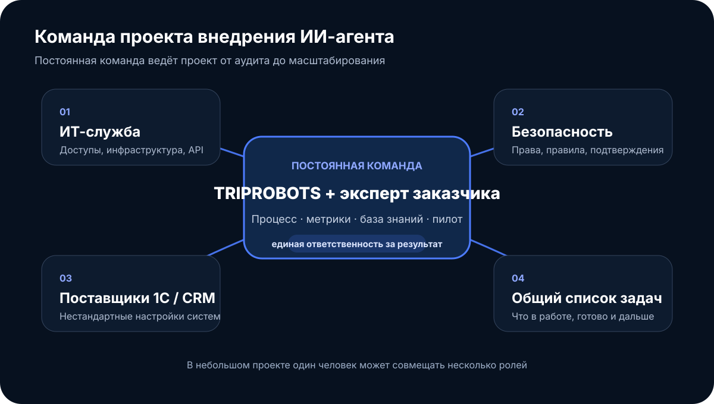
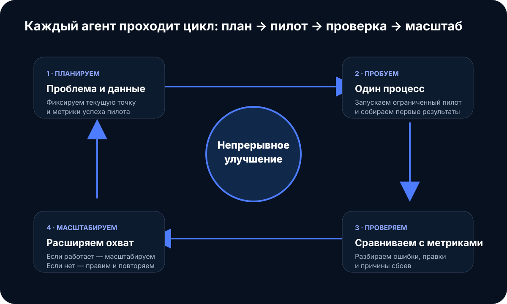

Агент должен меняться вместе с процессом
ИИ-агент окупается, когда он встроен в работу компании: подключён к её системам, знает её правила и регулярно улучшается по реальным данным. Купить готового бота и забыть о нём не получится — процессы меняются, и агент должен меняться вместе с ними.
Поэтому мы работаем не как подрядчик «сделал и ушёл», а как продуктовая команда. У каждого проекта есть постоянная команда, понятные зоны ответственности, короткий цикл «попробовали — измерили — улучшили» и общий с заказчиком список задач.
Кто работает над проектом
У каждого проекта есть небольшая постоянная команда, и в неё входит эксперт со стороны заказчика. Именно он знает, как на самом деле работает процесс, и без него агент будет отвечать «по учебнику».

В небольшом проекте один человек совмещает несколько ролей. Вокруг команды — те, без кого интеграция не состоится: ИТ-служба выдаёт доступы, служба безопасности согласует правила, поставщики 1С и CRM помогают с нестандартными настройками.
Три направления работ
В крупном проекте задачи делятся на три потока. Так срочное не вытесняет важное, а фундамент не строится в одиночку без пользы для бизнеса.
| Направление | Что входит | Зачем |
|---|---|---|
| Общая платформа | Интеграционный слой, права доступа и безопасность, журнал действий, мониторинг, инфраструктура | Один раз подключили 1С или CRM — и каждый следующий агент уже умеет с ними работать |
| Быстрые результаты | Новый канал заявок, изменение регламента или законодательства, поддержка уже работающих агентов | Бизнес видит пользу в течение недель, а не месяцев |
| Бизнес-процессы | Продажи, закупки, документооборот, поддержка клиентов, логистика | Главная экономия: агент забирает рутину целого отдела |
В небольшом проекте все три направления ведёт одна команда, в крупном — у каждого своя.
Цикл: планируем, пробуем, проверяем, масштабируем
Каждый агент проходит один и тот же цикл. В менеджменте его называют PDCA: Plan — Do — Check — Act. Смысл простой: не внедрять всё сразу, а сначала доказать пользу на малом.

Пример: агент по входящим заявкам
- Планируем. Заявки отвечаются часами, часть теряется. Считаем объём и время ответа. Метрики пилота: время первого ответа и доля потерянных заявок.
- Пробуем. Запускаем агента на одном канале, например на почте. Агент готовит ответ, менеджер подтверждает.
- Проверяем. Через 2–3 недели сравниваем «до» и «после»: насколько быстрее ответ и сколько ответов пришлось править.
- Масштабируем. Если метрики достигнуты, подключаем мессенджеры и сайт. Если нет — исправляем инструкции и базу знаний.
Как агент встраивается в ваши системы
Агент не заменяет 1С, CRM или почту — он работает поверх них. Ваши программы остаются на месте, сотрудники не переучиваются, а данные не переносятся без необходимости.
Пример: приходит письмо с заявкой → агент находит клиента в CRM → проверяет наличие и цену в 1С → готовит коммерческое предложение → менеджер подтверждает → сделка обновляется.
Интеграция идёт четырьмя шагами
- Карта систем. Вместе с вашими специалистами описываем, где лежат нужные данные и какие действия агенту реально нужны.
- Права доступа. Агент получает отдельную учётную запись с минимальными правами. Чтение и запись разделены.
- Подключение. Используем доступные API и стандартные интерфейсы систем. Модель ИИ можно сменить, а подключения останутся.
- Проверка. Сначала на тестовых данных, потом на живых — в режиме «агент предлагает, сотрудник подтверждает».
Зоны ответственности
| Вопрос | TRIPROBOTS | Заказчик |
|---|---|---|
| Что делать в первую очередь | Предлагаем и оцениваем эффект | Решает |
| Как сделать и довести до работы | Отвечаем | Принимает результат |
| Доступы к системам | Формулируем, какие нужны | Выдаёт и контролирует |
| Правила и знания процесса | Оформляем в базу знаний агента | Даёт эксперта процесса |
| Качество и безопасность агента | Тесты, журнал, мониторинг | Согласует правила подтверждения |
Список задач общий: заказчик видит, что в работе, что сделано и что дальше.
Принципы, на которых всё держится
Пять правил проекта
- Постоянная команда. Люди не меняются от этапа к этапу, поэтому не нужно заново объяснять ваш бизнес.
- Короткие циклы. Результат виден через недели, а не в конце полугодового проекта.
- Решения по цифрам. Критерии успеха фиксируются до старта, и по ним же принимается решение о масштабировании.
- Человек в контуре. Оплаты, договоры и внешние письма агент делает только после подтверждения сотрудника.
- Прозрачность. Общий список задач и журнал действий агента открыты заказчику.
Итог: вы получаете не разовую установку бота, а команду и метод, которые шаг за шагом переводят рутину на агентов и доказывают эффект цифрами.
Короткие ответы
Нужно ли менять 1С или CRM?
Нет. Агент работает поверх существующих систем и подключается к ним через доступные интерфейсы и права.
Сразу ли агент работает автономно?
Нет. Сначала используется режим, в котором агент предлагает действие, а сотрудник подтверждает. Автономность расширяется только после проверки качества.
Как понять, стоит ли масштабировать?
По показателям пилота: скорость, доля исправлений, потери, конверсия или другие метрики конкретного процесса.
Покажите один процесс, который стоит слишком дорого
За 1–2 недели аудита разложим его на шаги, определим точки автоматизации и посчитаем потенциальный эффект до начала полноценного внедрения.
Показать на нашем примере — бесплатно